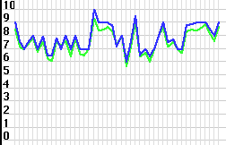

| Pros: Simple way to create charts and graphs. Customizable. Open Source.
Excenellent documentation. Cons: Pricey for what it does. Can only have one series of data. Only one color for all parts of a pie chart. Can only draw onscreen.
|
Chart Part 1.0
| Author: Tech Consulting Price: free–$500 (see review) Download: Tech Consulting Site |
Setting up ChartPart is easy. You drag it into your project, make a canvas, and set its super to ChartPart. Then, you can add data using the "AddValue" method. It takes two parameters: a number (the actual data), and a string (a label). It then draws a graph, bar graph (which is pictured to the right), or pie chart. Now that's simple!
ChartPart also highly customizable. If you turn off its autosizing property, you can control individual aspects of the scaling that it uses, such as the maximum and minimum values—a very useful thing.
You can also tell ChartPart to print out a copy of the chart—a big timesaver in some cases.
 Unfortunately, there are problems. One of the main uses for charts is to compare and contrast two or more series of data (like the picture to the left). For a lot of applications, this is a total show-stopper, and a major flaw in ChartPart.
Also, once I found out about this inability, I set out to make a graph chart drawer for my application that did allow multiple lines (a picture from it is at the right). I found out that it wasn't too hard. Of course, it certainly couldn't do as much as ChartPart, but it did what I needed—and it proves that the price for ChartPart (which I'll get to next) is way too high.
ChartPart has four different prices. It's free for personal use, or use in freeware apps. For any single person for-profit app, it's $20. For a 100-mile wide site liscense (for use in corporations), it's $100. And for a world-wide liscense, it's $500. So, for most people, it would end up costing about $20, which is quite a bit for something that's fairly simple.
Overall, ChartPart is a good class, but it certainly has a few kinks left to work out before it can be considered truly worth the money.
| Pros: Simple way to create charts and graphs. Customizable. Open Source.
Excenellent documentation. Cons: Pricey for what it does. Can only have one series of data. Only one color for all parts of a pie chart. Can only draw onscreen.
|